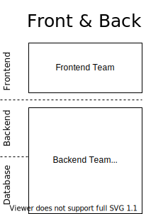
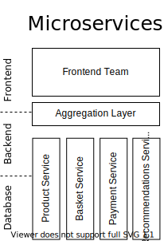

Open Components
A Micro Frontend Framework
Jakub Pawłowski
Micro Frontends
App Architecture
 
- split image into 3, use draw.io
Micro-everything

Autonomy
- own tech stack
- self contained
- customer focused
- has a mission
Micro Frontends
Advantages
- team autonomy
- reduced scope
- experiment & rework
- reusability (potentially)
- breaking down the monolith
-
http & cacheable
-
immutability
-
reusability (potentially)
-
small, autonomous teams
-
customer focused
Challenges
Yes,
- own tech stach
- independent deployments
- self contained
- customer focused
But…
- library hell
- versioning
- coherent styling
- component interaction
Micro Frontends
Challenges
- coherent styling
- dependencies & versioning
- interaction between components
Composition
How to implement?
- separate pages, interlinked
- iframes
- Server Side Includes
- Web Components
- custom frameworks
OpenComponents
OpenComponents is an open-source, “batteries included” micro frontends framework
notes:
Composition

Component structure
Component structure
Data flow
Interaction
via Events
// oc-buy-now
window.oc.events.fire('webshop:add-to-cart', {
id: 'product123',
amount: 1
});
// oc-basket
window.oc.events.on("webshop:add-to-cart", (_eventDetails, eventData) => {
const { id, amount } = eventData;
handleAddToCart(id, amount);
});
Versioning

Testing in isolation
Micro frontends
Challenges
- library hell
- versioning
- coherent styling
- component interaction
Ingredients
- ✅ client-side templates
- ✅ server-side registry with versioning
- ⚒️ do it yourself :)
- ✅ custom events
Examples
Links
-
https://opencomponents.github.io/ OpenComponents home
-
https://micro-frontends.org/ A nice introduction to micro frontends
-
https://martinfowler.com/articles/micro-frontends.html Martin Fowler’s take on it
Don’t forget
Guestline - we’re hiring!
Thank you!

 @qbikez
@qbikez